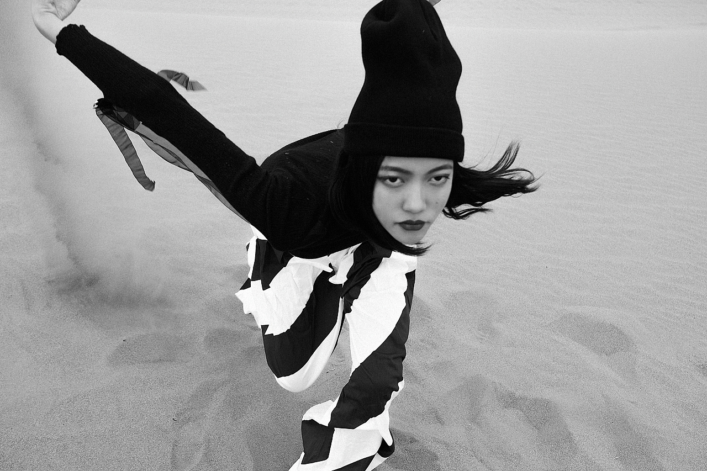

/ 关于
92年 / 男 / 专科 / 盐城
美感好，悟性强，勤奋好学，有良好的组织纪律性和强烈的团队意识， 热爱影视业，知识面相当广泛；
有较好的艺术表现力和良好的艺术节奏感及扎实的影视基础知识和寻求艺术的最佳表现渴求；
有熟练的photoshop数码后期、primere 和ae的使用能力。
本人主攻人像摄影、广告摄影及数码后期；兼做摄像（熟练专业级佳能xl1标清摄像机）及非编剪辑；
/ 技能
Photoshop
· 熟练使用修图技能以及后期处理
indesign
· 主要用于画册排版，熟练使用
Illustartor
· 矢量软件，熟练使用
primere
· 了解后期视频剪辑与效果处理
- 精通各种产品的摄像与摄影；
- 精通摄像、灯光、布景等拍摄的各个环节，能独立完成拍摄工作；
- 能独立处理后期素材，包括图片、视频等。
/ 作品
站酷下载的图片
站酷下载的图片
站酷下载的图片
/ 经历
2011 - 2014无锡职业技术学校 广告设计与制作
2014 - 2015无锡 平面设计
2015.6 - 至今无锡 自由摄影师